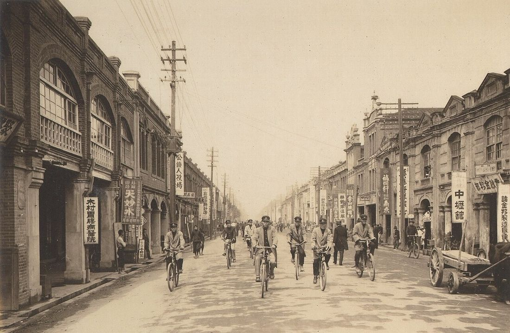

1696
蘇門答臘的濕剝法：印尼咖啡的土味從哪來
很多人第一次喝曼特寧都會問：怎麼有一股土味？
從衣索比亞的山羊、葉門的港口、倫敦一便士的咖啡館，到台北武昌街的明星。這裡收著咖啡101 每一集的完整故事，照年代、產地和城市排好，慢慢讀。
這週 IG 最多人看
肯亞最有名的咖啡品種，祖先是一棵在乾旱裡活下來的樹。
單位：百萬袋（每袋 60 公斤），2025/26 產季預估。全世界合計約 178.7 百萬袋，巴西一國就佔三分之一以上。資料：美國農業部 USDA。看各產區的故事與風味
